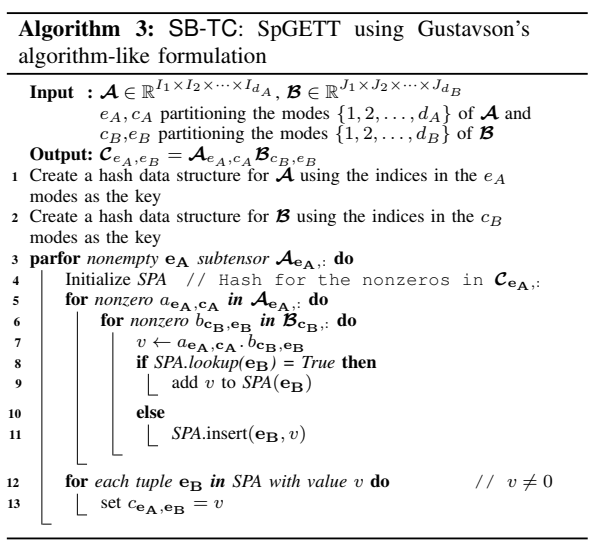

SpGETT
Efficient Parallel Sparse Tensor Contraction¶
总结：在调研现有的SpGETT操作的实现基础上，提出了基于hashing的新SpGETT计算方法，并对well-known SpGEMM算法进行了适配(main contribution)
Background:¶
Tensor Contraction: 该操作指的是对于一个多维的Tensor，通过对一个或多个索引进行求和来减少张量的维度，而不改变其他维度，称为GETT操作。
举个例子，假设Tensor \(A\in R^{I\times J\times P \times Q}, B\in R^{P\times Q\times L}\)，那么将A和B在P和Q维度上进行contraction，最终会得到Tensor \(C\in R^{I\times J \times L}，\text{其中}c_{ijl}=\sum_{p=1}^{p=P}\sum_{q=1}^{q=Q}a_{ijpq}\cdot b_{pql}\)
现在的SpGETT操作有两种实现方式： + 将input tensors转换为matrices，然后利用SpGEMM的高性能实现，最终将结果矩阵转换回tensor + 在tensor这个结构中直接执行标量运算，不需要转换回矩阵。
对于第一种方式，以上述的两个Tensor为例，对于\(c_{ijl}=\sum_{p=1}^{p=P}\sum_{q=1}^{q=Q}a_{ijpq}\cdot b_{pql}\)操作，可以将Tensor A重排为\(IJ\times PQ\)的矩阵，B重排为\(PQ \times L\)的矩阵，那么Tensor C的计算结果就是\(C = AB \in R^{IJ \times L}\)的矩阵.
存在的问题在于，在Sparse的情况下，如果矩阵维度过大，那么将tuples of contraction indices直接放在AB矩阵中是不现实的，所以应该直接使用AB中含有非零元素的tuples of contraction indices，在上述例子中就是找到非零的(p, q)
对于第二种方式，存在的问题在于，两个Tensor需要执行必要的multiply-add operations，但是需要知道哪些元素需要相乘以及在哪里进行result adding。
Hashing scheme在两种方法中固有存在的问题，在SpGETT中不经过预处理，要hash的元素是未知的，并且可能存在重复的键值，这会导致不同的非零元素在A中可能在同一列或者是C中的输出元素无法访问...所以static hashing是不可行的，因此作者提出了一种parallel dynamic hashing method
一些term和notation：Tensor的每一个维度称为一个mode，在Tensor Contraction操作中，input tensors中的indices称为contraction indices，output tensors中的indices称为external indices. \(c_A\)代表A中的contration modes, \(e_A\)代表A中的external modes.
在进行rearrange时，对于Tensor \(A \in R^{n_1\times n_2 \times \cdots \times n_d}\)，可以重排为矩阵\(A \in R^{{n_{r_1}\times ... n_{r_p}}\times {n_{c_1}\times ... n_{c_{d-p}}} = A_{S_R \times S_C}}\), 前者代表矩阵\(A\)的行modes，后者代表矩阵\(A\)的列modes，即将A的modes划分为\(S_R\)和\(S_C\)两部分。在这种重排情况下，tensor中的一个nonzero element \(a_{i1,...,id}\)对应于矩阵中的element \(a_{rc}\)，r对应于\(S_R\)中的所有Indices，c对应于\(S_C\)中的所有Indices. 但是显然的是，\(S_R\)和\(S_C\)中许多modes对应的元素全为zero，因此造成了巨大的浪费。
在进行SpGETT操作时，A中的external indices对应于A中的行，contraction indices对应于A中的列，而B则相反，那么\(c_{ij,kl}=\sum_{p,q}a_{ij,pq}\cdot b_{pq,kl}\).
Sparse Tensor的常用存储格式：COO, F-COO, HiCOO, CSF... COO指的是将一个nonzero的indices in all dimensions和value分开存储。
Gustavson’s algorithm: SpGEMM广泛采用的核心算法
{kind=link}
在这个算法中，每次可以计算出Output Matrix \(C\)中的一行结果，因此\(C\)中的每一行的建立是独立的，因此在这个维度上可以并行计算。但是存在的问题是，对于Sparse Matrix来说，每一行的operation次数是非常不同的，如果不对Input Matrix进行检查，就无法得知Output Matrix的稀疏性情况。
所以在SpGEMM的实现中，实现了SPA(Sparse Accumulator)来处理快速寻找添加到C中existing entry的标量计算或者是创建该existing entry，它会在C中一行的所有nonzeros计算出来后进行efficient accumulation. SPA的实现主要有四种形式：heap, hashing, sorting, dense array.
现有的dynamic perfect hashing method: Cuckoo hashing
- 在该哈希方法中，使用\(l\)个哈希函数，假设使用两个哈希函数。对于一个arriving item \(x\)，会计算两个哈希值作为索引位置，然后将这个Item放置到其中的一个位置。在查询时，只需要检查这两个位置。当两个位置都已经被占据时，那么会从这两个位置中随机选取一个位置放置item \(x\)，将原本的item \(y\)移动到原先两个位置中剩余的位置。如果item \(y\)的剩余位置已经被占据了，那么就循环该过程，直到item \(z\)被挪到它对应的剩余位置或者需要rehash.
SpGFETT to SpGEMM¶
对于Tensor \(A, B\)，将其转换为矩阵\(A_{e_A\times c_A}, B_{c_B\times e_B}\)。但是 matricization_后，A和B中会有很多的空行和空列，所以需要只保留nonempty rows and columns. 那么对于nonempty subtensors \(A_{e_A,:}, B_{:,e_B}\), 分别代表A中的非零列和B中的非零行，计算\(C=AB\)时需要满足_consistency condition.
具体指的是，对于A中的一个nonzero \(a_{i,j}\)，如果整数j作为了这个元素的column index，那么B中的所有nonzero \(b_{j,k}\)需要将整数j作为row index.
在将计算后的结果矩阵\(C\)转换成Tensor \(C\)时，需要将结果矩阵\(C\)的非空row index和column index转换为原始的|e_A|-tuple i和|e_B|-tuple j，称为_tensorization_。因此需要将|e_A|-tuple i映射到integer i，并需要inverse of this map来进行tensorization.
通常使用sorting或者hashing来处理类似的矩阵A和B的consistent matricization，以及C的coupled tensorization
SB-Smat 在该算法中，将A和B的contraction modes中的nonzeros的index进行sort，从而得到A中列和B中行的consistent numbering.然后，每个tensor对应external modes中nonzeros的indices也会进行sort，为|e_A|-tuple 和|e_B|-tuple得到interger id. 并且需要维护一个reverse map来映射矩阵C中的row和column id到原来的tensor tupl e_A|e_B.
{kind=link}
SB-Hmat 在进行consistent matricization时，将A和B的contraction indices加入到一个hash table中，使用dynamic hashing method. 维护了一个indirection array(A and B combined)来存储unique contraction indices \(c_A\)已分配的连续id.
在进行hash时，将contraction indices作为key，当\(c_A\)不存在在hash_table时，将\(c_A\)加入到hash table中，并将new id存储到indirection array中\(c_A\)对应的位置。
而对于external indices的id，为A和B分别创建一个hash table，当\(e_A\)在hash table中不存在时，将\(e_A\)加入到hash table中，并把生成的id作为COO_A中的row-id. 并将\(c_A\)的id作为COO_A的column-id. 同理也维护一个reverse map存储external indices到其id的映射。
{kind=link}
SB-TC¶
本文提出的parallel SpGETT方法直接在tensor维度进行计算，利用Gustavson算法的思想来生成output sensor, subtensor by subtensor.
在该算法中，每次对subtensors \(C_{e_A,:}\)进行SpGETT操作，每个resultant tensor可以独立的构建。那么如何构建呢，对于\(A_{e_A,:}\)中的所有nonzeros，会和对应\(B_{c_B,:}\)中的所有nonzeros进行相乘。然后利用SPA进行相加，最后将SPA的结果写出道\(C_{e_A,:}\)中
在遍历\(A_{e_A,:}中的nonzeros时，通过建立hash data structure，使用external indices of nonzeros作为key，每个index指向一个distinct location. 这个structure中的一个location指向了一个连续数组，该数组存储了A中所有具有相同\)e_A$的nonzeros，等同于矩阵化后矩阵A中的一行，所以将遍历转化为了访问一个连续数组。
在将\(a_{e_A,c_A}\)与\(B_{c_B,:}\)中的nonzero进行乘法计算时，需要将subtensor of B中的nonzerons聚集在一起。所以建立了另一个hash structure，使用contraction indices of its nonzeros作为key，和上述类似。
维护了一个动态的哈希 SPA来存储\(a_{eA,cA} . b_{cB,eB}\)的乘积结果，使用B中external modes的nonzeros对应的Indices作为Hash key. 每当产生一个完整的subtensor，就写入到Tensor \(C\)中。 
{kind=link}
Preprocessing¶
- 评估output tensor的内存需求，apply the probabilistic estimation method proposed by Cohen，将其从Sparse matrices应用到tensors上。来预估\(C\)和\(C_{e_A}\)中的nonzeros数量
- Load balancing: 为了减轻由于输出\(C_{e_A}\)向量所需的操作次数不同所带来的影响，通过遍历\(A_{e_A,:}\) subtensor中的所有nonzeros，计算对应\(B_{c_B,:}\)中的nonzeros元素的数量，从而得到这个subtensor的flops。然后对所有的subtensor进行此操作便可以得到一个前缀和，根据这个前缀和给每个thread分配starting subtensor让flops尽量平均.
Optimizations for SpGETT¶
- Handling subtensors \(A_{e_A,:}\) of A with a single nonzero: 对于只有一个nonzero的subtensors，不需要维护一个SPA，直接将结果写入到output subtensor对应位置即可。
- Reducing the number of lookups to the sparse accumulator: 基于以下观察，对于subtensors \(A_{e_A,:}\)中的nonzeros，其中的第一个nonzero可以直接将它的乘法结果写入到Output tensor，因为此时SPA中在它之前没有数据。因此，可以通过preprocessing将对应B中nonzeros最大的A中的nonzero放在第一个.
SBhash¶
a dynamic perfect hashing method. 具体指的是对这个hash data structure的lookup时间在最坏情况下是其中的item size的常数时间，那么对于一个\(d\) indices的data，最坏的常数时间就是\(O(d)\) operations.
并且\(SBhash\)支持支持顺序插入(Batched Inseration)，并且Batched Inseration可以并行进行
Design¶
SBhash是一个两层的哈希结构，用一个含有\(n_h\) indices的set \(H\)来哈希给定的tensor中的nonzeros.
第一层是a set of buckets，每个bucket有很多slots，每个$n_h $ tuple都会映射到一个bucket中，然后再分配给slots。当\(n_h<d\)的时候，因为只取了tuple索引的一部分来哈希，就会有多个nonzero映射到同一个slot中。所以每个slot指向一组nonzeros，将这些nonzeros维护成一个连续数组并存储每个nonzeros的相关信息作为辅助列表。
Hash function in first level: \(h(k,x,p,n)=(k^Tx_H\ mod\ p)mod\ n\)
在这个哈希函数中，n是buckets的数量，p是一个比n大的素数，vector k是一个\(n_h\) tuple， \(x_h\)是x用于hashing dimensions的indices.
第二层中，考虑到每个Bucket \(B_i\)会分到\(b_i\)个不同的tuple，对于那些\(b_i\)小于4的bucket，直接将bucket中的slots维护成一个连续数组。而对于其他的bucket，进行second hashing. 具体来说使用了Cuckoo hashing的变体，在每个Bucket中，存储了两个random的key值，并且这种bucket维护的slots是大于\(b_i\)两倍的最小的2的倍数(保证查找和插入效率)。
在SB-Hmat中存储的是indices tuple的id，在SB-TC中存储的是{\
{kind=link}
Cuckoo hashing specifications
考虑一个item，现在有\(l\) 个Hashing functions，那么就会得到\(l\) 个对应的slots。那么如何插入呢？相较于原先的随机选取，本方法设计一种插入方法
Insertion: 对于一个d indices的item，两个hashing function会从中选取两个不同的\(n_h\) tuples来进行hashing。假设bucket \(B_i\)有\(N_s\)个slots，需要将\(b_i\)个distinct \(n_h\) tuples映射到其中。
Hash function in second level: \(h_1(k_1^i, x, p, N_s)=(k_1^ix_H\ mod \ p)\ mod N_s\) and \(h_2(k_2^i, x, p, N_s)=(k_2^ix_H\ mod \ p)\ mod N_s\)
其中\(N_s\)是大于\(2b_i\)的，\(k_1^i和k_2^i\)是两个不同的hashing key，在本方法中，将slots和items之间的联系看作是一个biparatte graph，那么一个item的insertion就可以看作是graph中两个子集(item and slots)之间的连线(vertex match), 每条edge可以通过hashing function即时计算。
当一个item对应的两个位置都被占据时，首先使用\(h_1(x)\)来寻找当前匹配的argumenting path(增广路径)，如果无法找到则使用\(h_2(x)\)来寻找argumenting path. 在实际实现中，在不同的BFS/DFS遍历中为augmentation维护一个slots(size of \(N_s\))的标记数组，这个数组在不同的遍历中复用。并维护了一个argumenting array(size of \(n_I\))来维护argumenting path的item，从而在不同的argumentation中复用。
如果两次都没找到，就进行rehashing，在进行rehashing时，会首先对hashing function进行更新，即调整对应bucket slots大小为第二种bucket。
Parallel batch insertion
SBhash支持batch insertion，具体过程是首先并行为每个item计算出bucket id，然后将这些bucket id填充到一个数组中，最后将这些item并行插入到SBhash structure中，让每个处理相同数量的item。
为了保证多个item在填充到same slot时的线程安全，为每个slots的auxiliary list(dynamic array)维护一个atomic counting number，记录当前list中的item数量, resize list时对slots上锁，rehashing时对bucket上锁。
Memory Requirement of SBhash
- SB-Hmat: 对于contraction indices，空间需求是\(2\times (nnz(A)+nnz(B))+N_{TOS}\), 对于external indices, 空间需求是\(\(2\times (nnz(A)+nnz(B)+N_{TOS})\), 其中\)N_{TOS}$指的是bucket中总共占据的location(slots)
- SB-TC:
- \(H_A\)需要\((d+1)nnz(A)+N){TOS}\) integers and \(nnz(A)\) doubles, \(H_B\)同理，具体来说考虑了bucket数目，occupied location和auxiliary list中存储元素的内存
- SPA: \(|e_B|\times nnz(C_{eA,:}) + \tilde{nnz}(C_{eA,:}) + N_{TOS}\) integers and \(nnz(C_{e_A,:})\) doubles